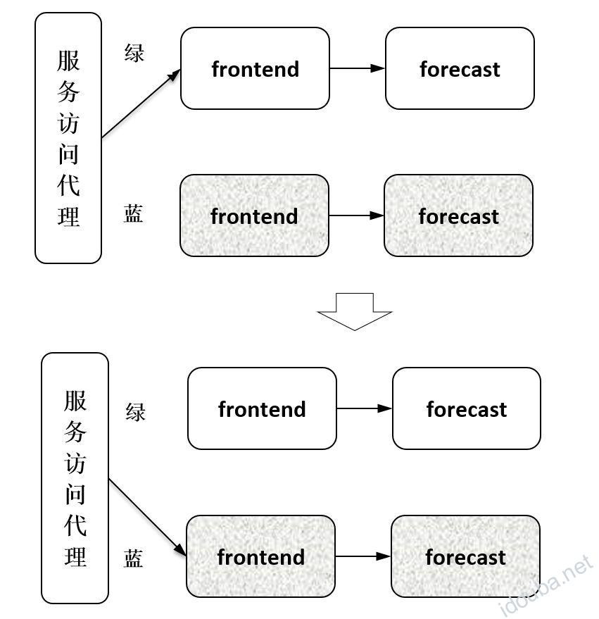
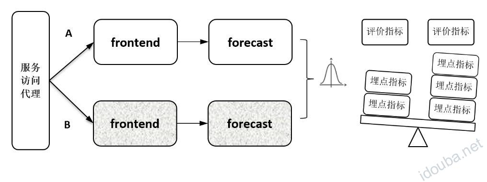
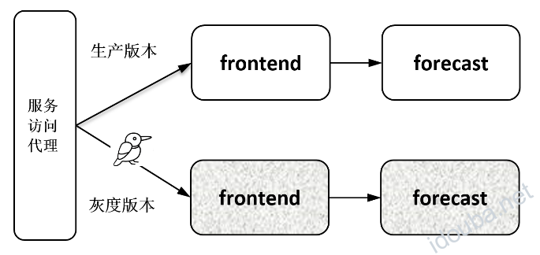
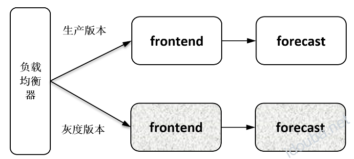
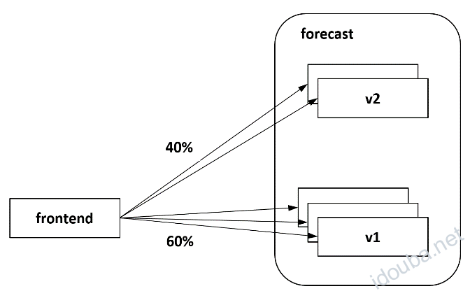
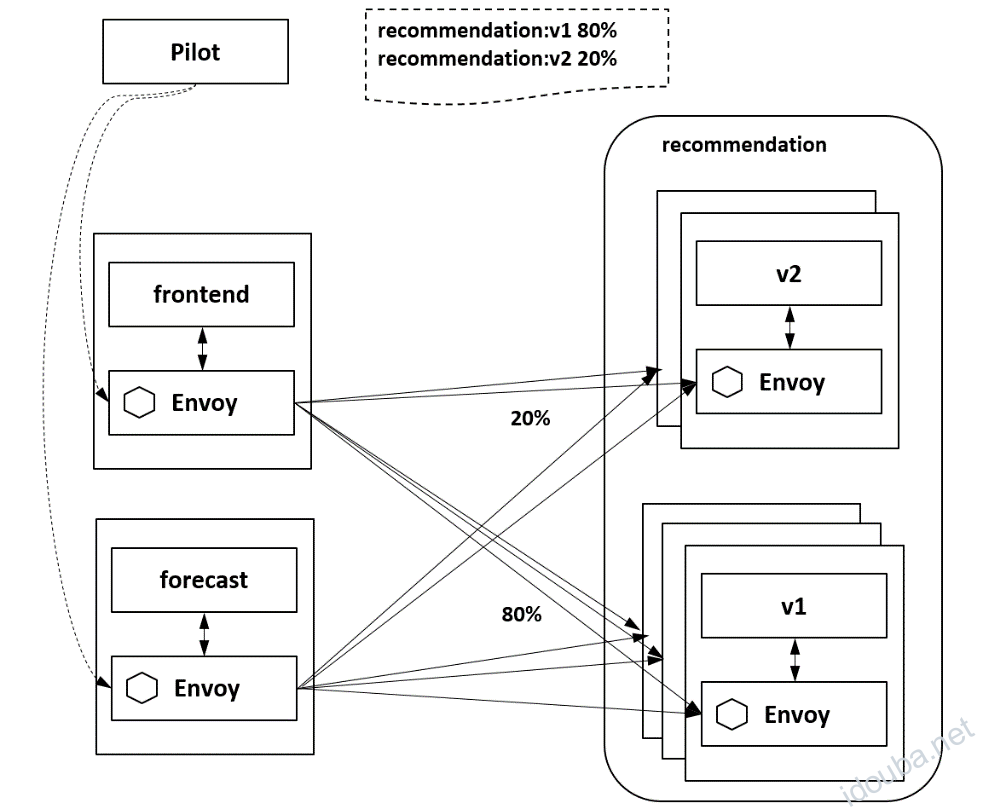
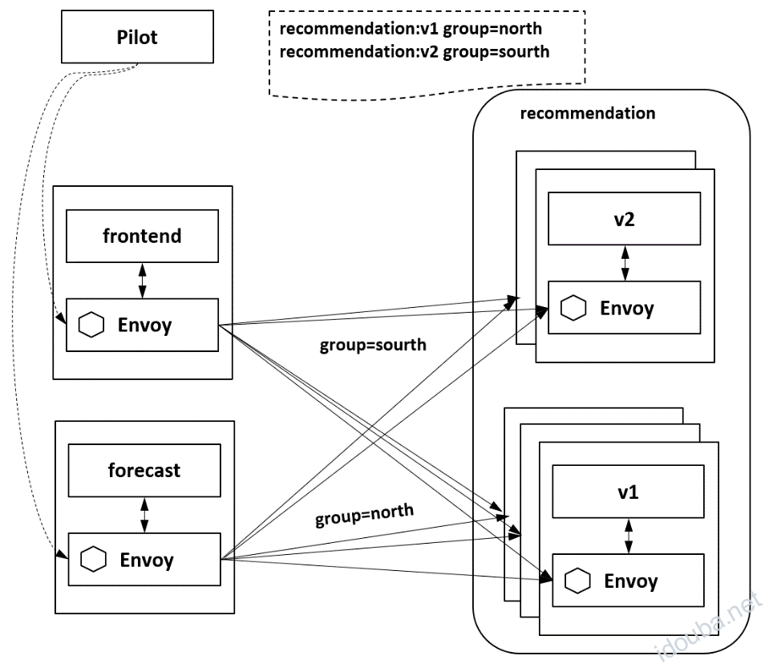

Istio灰度发布 –《云原生服务网格Istio》书摘03
本节书摘来自华为云原生技术丛书《云原生服务网格Istio:原理,实践,架构与源码解析》一书原理篇的第3章非侵入的流量治理，第3.1.4小节灰度发布原理。更多内容参照原书，或者关注容器魔方公众号。
3.1.4 灰度发布
在新版本上线时，不管是在技术上考虑产品的稳定性等因素，还是在商业上考虑新版本被用户接受的程度，直接将老版本全部升级是非常有风险的。所以一般的做法是，新老版本同时在线，新版本只切分少量流量出来，在确认新版本没有问题后，再逐步加大流量比例。这正是灰度发布要解决的问题。其核心是能配置一定的流量策略，将用户在同一个访问入口的流量导到不同的版本上。有如下几种典型场景。
1．蓝绿发布
蓝绿发布的主要思路如图3-13所示，让新版本部署在另一套独立的资源上，在新版本可用后将所有流量都从老版本切到新版本上来。当新版本工作正常时，删除老版本；当新版本工作有问题时，快速切回到老版本，因此蓝绿发布看上去更像一种热部署方式。在新老版本都可用时，升级切换和回退的速度都可以非常快，但快速切换的代价是要配置冗余的资源，即有两倍的原有资源，分别部署新老版本。另外，由于流量是全量切换的，所以如果新版本有问题，则所有用户都受影响，但比蛮力发布在一套资源上重新安装新版本导致用户的访问全部中断，效果要好很多。

图3-13 蓝绿发布2．AB测试
AB测试的场景比较明确，就是同时在线上部署A和B两个对等的版本来接收流量，如图3-14所示，按一定的目标选取策略让一部分用户使用A版本，让一部分用户使用B版本，收集这两部分用户的使用反馈，即对用户采样后做相关比较，通过分析数据来最终决定采用哪个版本。

图3-14 AB测试对于有一定用户规模的产品，在上线新特性时都比较谨慎，一般都需要经过一轮AB测试。在AB测试里面比较重要的是对评价的规划：要规划什么样的用户访问，采集什么样的访问指标，尤其是，指标的选取是与业务强相关的复杂过程，所以一般都有一个平台在支撑，包括业务指标埋点、收集和评价。
3．金丝雀发布
金丝雀发布就比较直接，如图3-15所示，上线一个新版本，从老版本中切分一部分线上流量到新版本来判定新版本在生产环境中的实际表现。就像把一个金丝雀塞到瓦斯井里面一样，探测这个新版本在环境中是否可用。先让一小部分用户尝试新版本，在观察到新版本没有问题后再增加切换的比例，直到全部切换完成，是一个渐变、尝试的过程。

图3-15 金丝雀发布蓝绿发布、AB测试和金丝雀发布的差别比较细微，有时只有金丝雀才被称为灰度发布，这里不用太纠缠这些划分，只需关注其共同的需求，就是要支持对流量的管理。能否提供灵活的流量策略是判断基础设施灰度发布支持能力的重要指标。
灰度发布技术上的核心要求是要提供一种机制满足多不版本同时在线，并能够灵活配置规则给不同的版本分配流量，可以采用以下几种方式。
1．基于负载均衡器的灰度发布
比较传统的灰度发布方式是在入口的负载均衡器上配置流量策略，这种方式要求负载均衡器必须支持相应的流量策略，并且只能对入口的服务做灰度发布，不支持对后端服务单独做灰度发布。如图3-16所示，可以在负载均衡器上配置流量规则对frontend服务进行灰度发布，但是没有地方给forecast服务配置分流策略，因此无法对forecast服务做灰度发布。

图3-16 基于负载均衡器的灰度发布2．基于Kubernetes的灰度发布
在Kubernetes环境下可以基于Pod的数量比例分配流量。如图3-17所示，forecast服务的两个版本v2和v1分别有两个和3个实例，当流量被均衡地分发到每个实例上时，前者可以得到40%的流量，后者可以得到60%的流量，从而达到流量在两个版本间分配的效果。

图3-17 基于Pod数量的灰度发布给v1和v2版本设置对应比例的Pod数量，依靠Kube-proxy把流量均衡地分发到目标后端，可以解决一个服务的多个版本分配流量的问题，但是限制非常明显：首先，要求分配的流量比例必须和Pod数量成比例，如图3-17所示，在当前的Pod比例下不支持得到3:7的流量比例，试想，基于这种方式支持3:97比例的流量基本上是不可能的；另外，这种方式不支持根据请求的内容来分配流量，比如要求Chrome浏览器发来的请求和IE浏览器发来的请求分别访问不同的版本。
有没有一种更细粒度的分流方式？答案当然是有，Istio就可以。Istio叠加在Kubernetes之上，从机制上可以提供比Kubernetes更细的服务控制粒度及更强的服务管理能力，该管理能力几乎包括本章的所有内容，对于灰度发布场景，和刚才Kubernetes的用法进行比较会体现得更明显。
3．基于Istio的灰度发布
不同于前面介绍的熔断、故障注入、负载均衡等功能，Istio本身并没有关于灰度发布的规则定义，灰度发布只是流量治理规则的一种典型应用，在进行灰度发布时，只要写个简单的流量规则配置即可。
Istio在每个Pod里都注入了一个Envoy，因而只要在控制面配置分流策略，对目标服务发起访问的每个Envoy便都可以执行流量策略，完成灰度发布功能。
如图3-18所示为对recommendation服务进行灰度发布，配置20%的流量到v2版本，保留80%的流量在v1版本。通过Istio控制面Pilot下发配置到数据面的各个Envoy，调用recommendation服务的两个服务frontend和forecast都会执行同样的策略，对recommendation服务发起的请求会被各自的Envoy拦截并执行同样的分流策略。

图3-18 Istio基于流量比例的灰度发布在Istio中除了支持这种基于流量比例的策略，还支持非常灵活的基于请求内容的灰度策略。比如某个特性是专门为Mac操作系统开发的，则在该版本的流量策略中需要匹配请求方的操作系统。浏览器、请求的Headers等请求内容在Istio中都可以作为灰度发布的特征条件。如图3-19所示为根据Header的内容将请求分发到不同的版本上。

图3-19 Istio基于请求内容的灰度发布